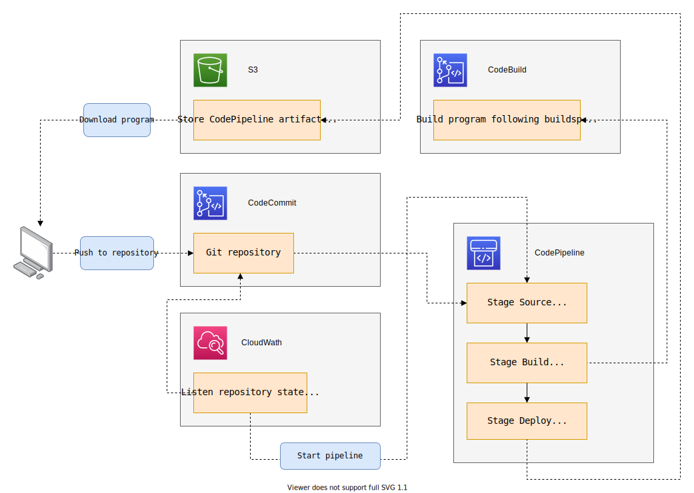
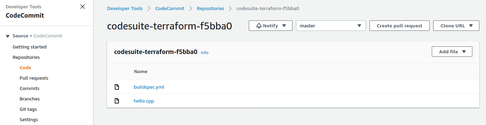
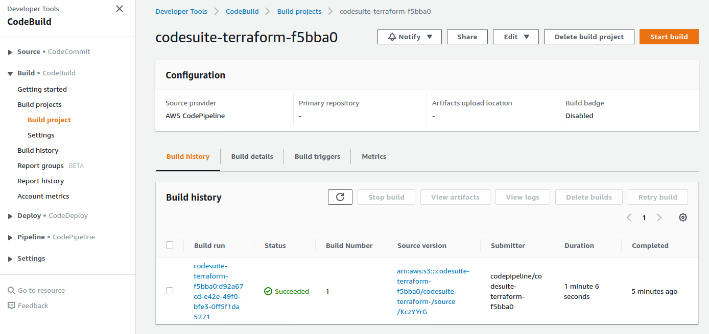
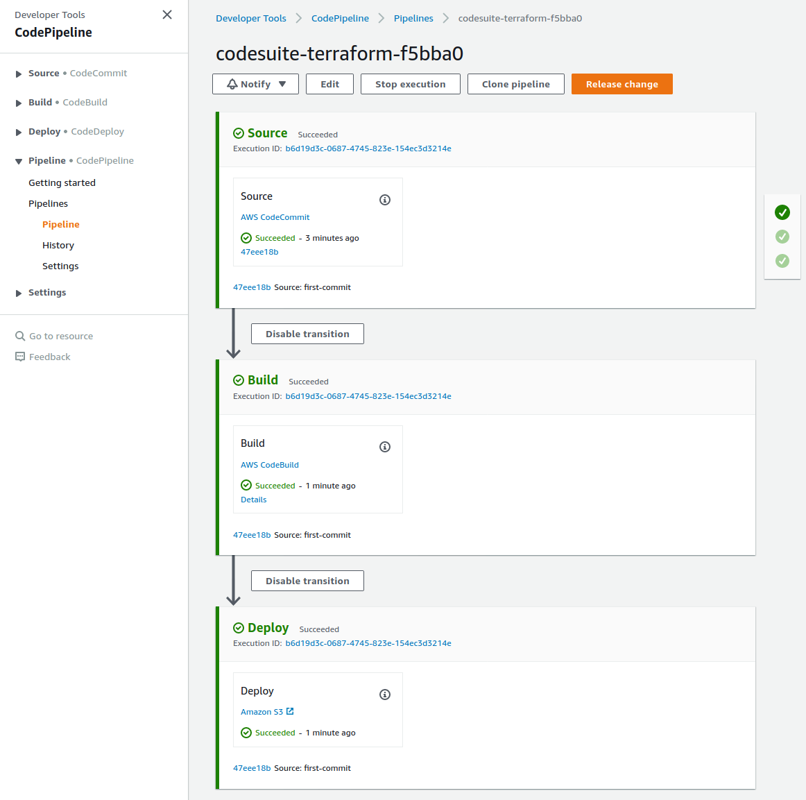
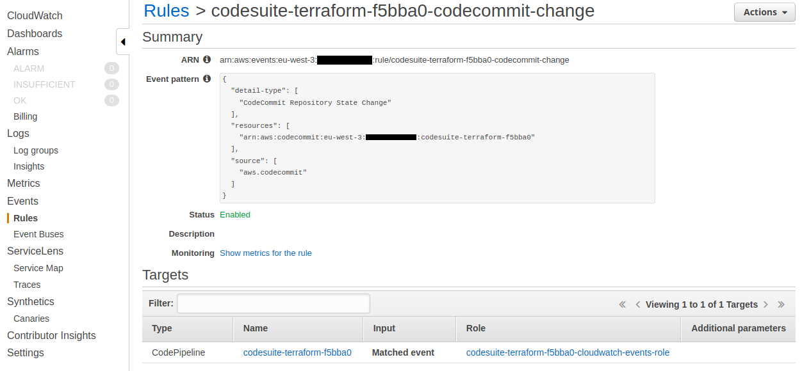

Codesuite pipeline + Terraform

Install and setup the project
Get the code from this github repository :
# download the code
$ git clone \
--depth 1 \
https://github.com/jeromedecoster/aws-codesuite-pipeline-terraform.git \
/tmp/aws
# cd
$ cd /tmp/aws
Exploring the project
Let’s look at some parts of the source code.
If we look the Makefile, we have some actions to build and use the project :
init: # terraform init + create ssh keys and passphrase
./init.sh
apply: # terraform plan then apply with auto approve
terraform plan -out=terraform.plan
terraform apply -auto-approve terraform.plan
clone: # git clone the codecommit repository
./clone.sh
first-commit: # setup files then git add + commit + push to the codecommit repository
./first-commit.sh
down: # download + execute hello.out
./down.sh
Let’s start :
# terraform init + create ssh keys and passphrase
$ make init
Terraform is now ready and we have some new files :
# your passphrase
$ cat passphrase.txt
f54yk
# your ssh public key file
$ cat ssh_rsa.pub
ssh-rsa AAAAB3NzaC1yc2EAAAADAQABAAABAQ...
The project use a single terrform module, named pipeline.
The codecommit.tf file is used to :
- Create the git repository.
- Create the IAM user with SSH access to push and pull.
resource aws_codecommit_repository repository {
repository_name = var.project_name
description = "terraformed repository"
}
# ...
resource aws_iam_user user {
name = "${var.project_name}-commit-user"
}
resource aws_iam_user_ssh_key user {
username = aws_iam_user.user.name
encoding = "SSH"
public_key = file("ssh_rsa.pub")
}
The codebuild.tf file is used to :
- Create the build environment.
resource aws_codebuild_project codebuild {
name = var.project_name
service_role = aws_iam_role.codebuild_role.arn
source {
type = "CODEPIPELINE"
}
artifacts {
type = "CODEPIPELINE"
}
environment {
type = "LINUX_CONTAINER"
image = "aws/codebuild/docker:18.09.0-1.7.0"
compute_type = "BUILD_GENERAL1_SMALL"
privileged_mode = true
}
}
The codepipeline.tf file is used to :
- Create the orchestration pipeline.
- Three stages are created :
Source,BuildandDeploy.
resource aws_codepipeline codepipeline {
name = var.project_name
role_arn = aws_iam_role.codepipeline_role.arn
artifact_store {
location = aws_s3_bucket.artifacts_bucket.bucket
type = "S3"
}
stage {
name = "Source"
action {
name = "Source"
category = "Source"
owner = "AWS"
provider = "CodeCommit"
version = "1"
output_artifacts = ["source"]
configuration = {
RepositoryName = var.project_name
BranchName = "master"
PollForSourceChanges = "false"
}
}
}
stage {
name = "Build"
action {
name = "Build"
category = "Build"
owner = "AWS"
provider = "CodeBuild"
version = "1"
configuration = {
ProjectName = var.project_name
}
input_artifacts = ["source"]
output_artifacts = ["build"]
}
}
stage {
name = "Deploy"
action {
name = "Deploy"
category = "Deploy"
owner = "AWS"
provider = "S3"
version = "1"
configuration = {
BucketName = aws_s3_bucket.artifacts_bucket.bucket
ObjectKey = "public"
Extract = "true"
}
input_artifacts = ["build"]
}
}
}
The cloudwatch.tf file is used to :
- Listen the CodeCommit Repository State Change.
- Then start the pipeline execution.
resource aws_cloudwatch_event_rule codecommit_change_event_rule {
name = "${var.project_name}-codecommit-change"
event_pattern = local.event_pattern_json
}
# create event pattern json for the event rule
locals {
event_pattern = {
source = ["aws.codecommit"]
detail-type = ["CodeCommit Repository State Change"]
resources : [aws_codecommit_repository.repository.arn]
}
event_pattern_json = jsonencode(local.event_pattern)
}
# ...
# inline policy data
data aws_iam_policy_document cloudwatch_events_policy {
statement {
actions = ["codepipeline:StartPipelineExecution"]
resources = [aws_codepipeline.codepipeline.arn]
}
}
# ...
resource aws_cloudwatch_event_target codecommit_change_event_target {
# The name of the rule you want to add targets to.
rule = aws_cloudwatch_event_rule.codecommit_change_event_rule.name
# The Amazon Resource Name (ARN) associated of the target.
arn = aws_codepipeline.codepipeline.arn
# The Amazon Resource Name (ARN) of the IAM role to be used for this target when the rule is triggered.
role_arn = aws_iam_role.cloudwatch_events_role.arn
}
Our C++ program is not very ambitious :
#include <iostream>
int main()
{
std::cout << "Hello World\n";
}
Codebuild needs a buildspec.yml file to declare the steps and commands to execute :
version: 0.2
phases:
install:
commands:
- apt-get update -y
- apt-get install -y build-essential
build:
commands:
- echo Build started on `date`
- echo Compiling the C++ code...
- g++ hello.cpp -o hello.out
post_build:
commands:
- echo Build completed on `date`
artifacts:
files:
- hello.out
Run the project
We create the cloud infrastructure and download the git repository :
# terraform plan then apply with auto approve
$ make apply
# git clone the codecommit repository
$ make clone
# My passphrase is 'f54yk'
Enter passphrase for key './ssh_rsa': f54yk
Now we can push our source code files :
# setup files then git add + commit + push to the codecommit repository
$ make first-commit
# My passphrase is 'f54yk'
Enter passphrase for key './ssh_rsa': f54yk
We have now our CodeCommit repository :
- The two files are here.

And the CodeBuild project :
- The build status is Succeeded.

The CodePipeline pipeline :
- All the stages have a Succeeded status.

And the CloudWatch Events rule :

Now we can download and execute our C++ compiled program :
# download + execute hello.out
$ make down
Hello World